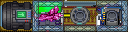
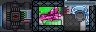
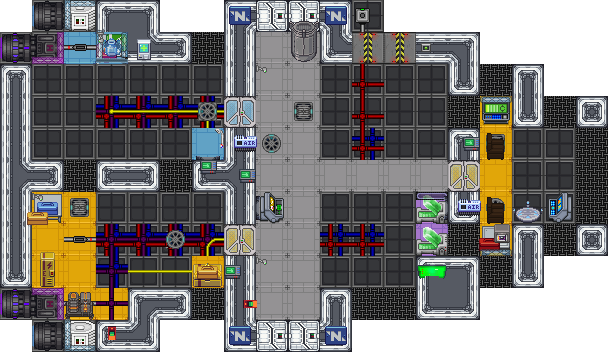
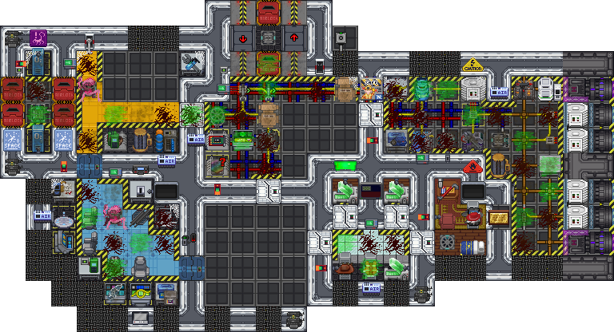
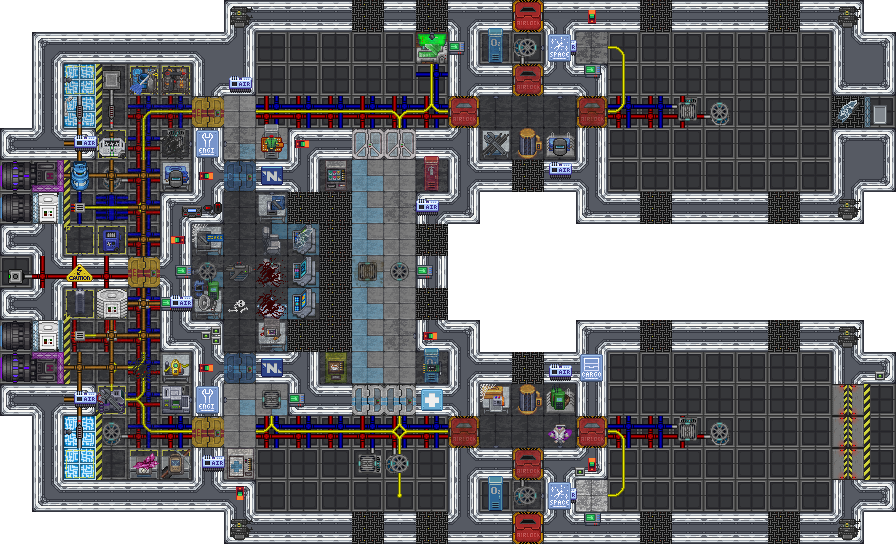
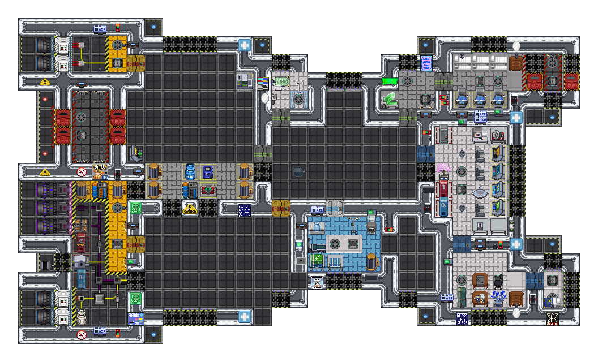
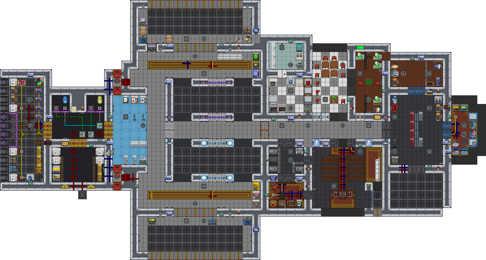

Ship Catalog
Seven hulls are on the shelf in the shipyard. Two of them are free, the rest cost ship parts you have to find and carry home. Every hull on the shelf is modular except the Blackpill: it comes with a fixed frame and a set of empty slots you fill with rooms of your choosing. This page is the shelf itself. For how you pay for a hull and what you do with its slots. See Buying & Upgrading Ships.
The shelf
Prices are in ship parts, split across four classes: combat, science, trade and misc. You need every class listed, not the total. Crew is the number of job slots on the hull's default theme, other themes and some modules change it.
| Ship | Parts | Crew | Size | Slots | Themes | Role |
|---|---|---|---|---|---|---|
| Pill-class Torture Device | Free | 4 | 4×1 | 1 | - | Mining pod. No airlock, no medbay. |
| Pill-class-B(lack) Suicide Device | Free | 3 | 3×1 | - | - | The Pill, with a self-destruct charge. |
| Goon-class Repurposed Emergency Shuttle | 10: 5 trade, 3 misc, 2 science | 8 | 19×11 | 5 | 4 | Cheapest hull with real rooms. Good first ship. |
| Kilo-class Mining Ship | 12: 6 trade, 4 misc, 2 science | 7 | 24×13 | 3 | 4 | Asteroid mining barge and small freighter. |
| Delta-class Frigate | 22: 8 combat, 8 misc, 6 trade | 7 | 28×17 | 4 | 4 | Flexible frigate: trader, clinic or bunkhouse. |
| Scarab-class Frigate | 36: 14 science, 10 misc, 8 trade, 4 combat | 19 | 33×20 | 4 | 3 | Mid-size all-rounder with the largest crew. |
| Phalanx-Class Super Battlecruiser | 60: 24 combat, 12 science, 12 trade, 12 misc | 11 | 56×30 | 5 | 4 | The capstone hull. Fights by boarding. |
Sizes are in tiles, width by height, on the default theme.
The hulls







Each image shows the hull's default theme. The shipyard draws the same map live, with your chosen theme and the module sitting in each slot.
Notes on individual hulls
The Pills are free and everyone owns them from the start. The Pill is four tiles: bunks, a bay you can fit out, and a cockpit. There is no airlock, so you suit up inside the cabin and carry ore back in a bag, and no medbay beyond the kits under the pilot's bed. The Blackpill trades the bay and one bunk for a self-destruct charge. Both are mining pods and nothing else. Expect to lose them.
The Goon is the first hull most crews buy. It is a converted emergency shuttle with five slots covering the port pod, engineering, the mining bay, the lounge and the cockpit annex, which is nearly the whole ship. Three or four players fit comfortably.
The Kilo is built around a cargo hold and an external dock prep strip. Helm, engine column, SMES bay and cryopods are all permanent, so it flies as bought with every slot empty. Its slots decide whether it runs as an ore hauler or a small freighter.
The Delta is a salvaged Nanotrasen frigate. Helm, engines, autolathe and cryo sit outside the slots, and the four slots (cargo, cafe, medical and dorms) cover most of what makes it a ship. It changes character more than any other hull depending on what you load.
The Scarab is the fleet's all-rounder and carries the biggest crew of any hull: nineteen job slots on its default configuration. It has a medbay, a cargo bay and full engineering as standard, and its four slots lean it medical, engineering, service or cargo.
The Phalanx is the most expensive hull and by far the largest. It has no heavy weapons on the bare hull; its two long internal bays and cycling airlocks are built for putting a boarding party onto someone else's ship, which is a real tactic. See Ship Combat. The lab, medbay and armory are all slots, so the marine gear only comes back if you pay for it. It is also a lot of ship to keep powered and crewed; see Ship Systems.
Crew numbers are not a target
The crew figure is how many job slots exist, not how many players you need. A Scarab with three people aboard is a very quiet ship with a lot of jobs nobody is doing. Pick a hull that matches the crowd you actually have.
Where hulls come from
You do not have to buy a ship to play. The round starts with a fleet of hulls that were rolled at random (hull, theme, and a module in every slot) and you can join any of them from the lobby. Buying your own hull makes you its captain and lets you set its course. See the New Player Guide for the join flow, Piloting for flying it, and Money & Trade for paying for it.